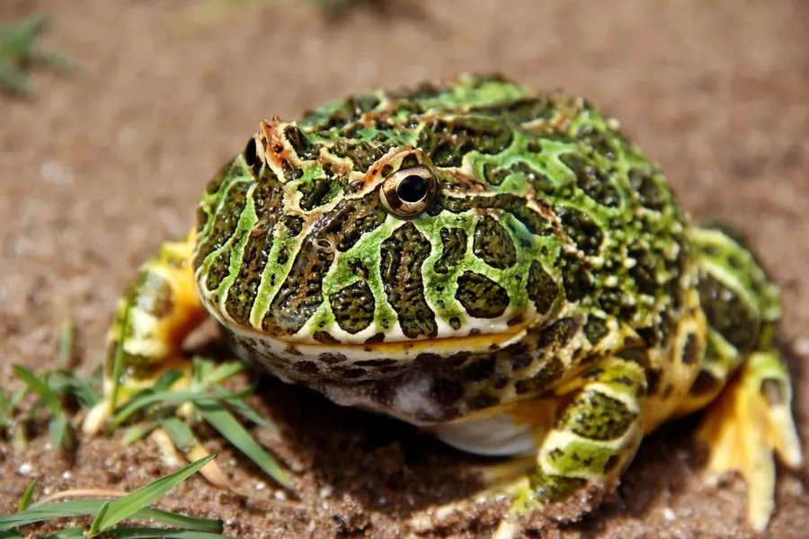

两栖动物 · 动物界
阿根廷角蛙 Ceratophrys ornata

阿根廷潘帕斯草原的角蛙，体色鲜绿并缀有红褐色斑块，外形像小恐龙，因宠物贸易被大量捕捉。
- 分类
- 门脊索动物门纲两栖纲目无尾目科角蛙科属角蛙属
- 栖息环境
- 潘帕斯草原、沼泽及季节性水洼附近的草地
- 地理分布
- 阿根廷、乌拉圭和巴西南部
- 保护级别
- IUCN 易危（VU）；非中国原产，在中国无保护级别
物种志
阿根廷角蛙体长 8–12 厘米，身体圆胖，头部宽大，口裂很宽，眼睑上方有一对尖角状突起。体背呈鲜绿色，缀有红褐色、橙红色或黑色斑块，腹面淡黄色，皮肤光滑而湿润，外形常被比作小恐龙。
它分布于阿根廷、乌拉圭和巴西南部的潘帕斯草原，生活在草地、沼泽和季节性水洼附近，白天埋在土中或落叶下，夜间伏击昆虫、其他蛙类和小型脊椎动物。雨季繁殖，卵产在临时水洼，蝌蚪具有强壮的角质颚，会捕食同类。阿根廷角蛙因体色艳丽、性格凶猛而成为宠物贸易的热门物种，加上草原开垦和排水，野生种群受到压力，被列为易危物种。
形态与习性
- 食性昆虫、其他蛙类和小型脊椎动物
- 体长约 8–12 cm
- 繁殖雨季在临时水洼产卵，蝌蚪会捕食同类
- 活动节律夜行性，白天埋在土中或落叶下
- 体色鲜绿色配红褐色斑块，眼睑有尖角
- 威胁草原开垦、排水和宠物贸易捕捉
趣味知识
- 阿根廷角蛙鲜绿配红褐的体色，让它看起来像一只小恐龙。
- 它的蝌蚪长着强壮的角质颚，会在水洼里捕食同类。
- 宠物贸易每年捕捉大量野生阿根廷角蛙，是其濒危原因之一。